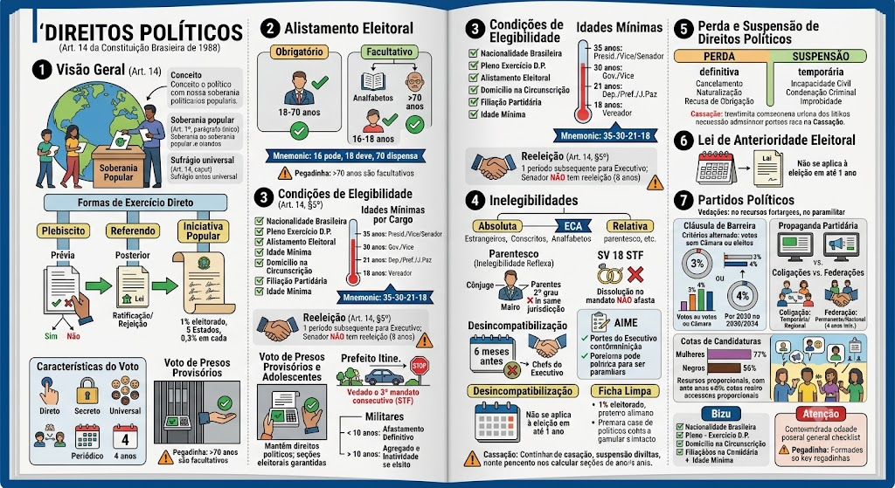

Conceito e Soberania Popular
Conceito e Soberania Popular
Conceito: conjunto de direitos que permite a participação do povo no poder estatal, seja diretamente (plebiscito, referendo, iniciativa popular) ou indiretamente (eleição de representantes).
Soberania popular (Art. 1º, parágrafo único): 'Todo o poder emana do povo, que o exerce por meio de representantes eleitos ou diretamente, nos termos desta Constituição.'
Sufrágio universal (Art. 14, caput): 'A soberania popular será exercida pelo sufrágio universal e pelo voto direto e secreto, com valor igual para todos, nos termos desta Constituição.'
Formas de Exercício Direto da Soberania Popular (Art. 14, I, II, III)
Formas de Exercício Direto da Soberania Popular (Art. 14, I, II, III)
Art. 14, incisos I, II e III prevêem três instrumentos de democracia direta:
- Plebiscito: consulta popular prévia à edição de ato legislativo ou administrativo. O povo decide antes da medida.
- Referendo: consulta popular posterior à edição do ato, para ratificação ou rejeição. O povo confirma ou rejeita o que já foi aprovado.
- Iniciativa Popular: projeto de lei apresentado diretamente pelos cidadãos, independentemente de provocação do Congresso Nacional ou do Executivo, desde que atendidos os requisitos legais (assinaturas de 1% do eleitorado nacional, distribuídas por 5 Estados, com 0,3% em cada).
Características do Voto
Características do Voto
O voto no Brasil tem quatro características principais:
- Direto: o eleitor escolhe diretamente seus representantes (sem colégio eleitoral).
- Secreto: ninguém sabe em quem você votou (garantia da liberdade de escolha).
- Universal: todos podem votar, observados os requisitos constitucionais.
- Periódico: eleições regulares (a cada 2 ou 4 anos, conforme o cargo).
🧠 MNEMÔNICO: 'DSUP' — Direto, Secreto, Universal, Periódico.
⚠️ Diferenciação entre Nacionalidade (Art. 12) e Direitos Políticos (Art. 14)
⚠️ Diferenciação entre Nacionalidade (Art. 12) e Direitos Políticos (Art. 14)
Relação entre Art. 12 (Nacionalidade) e Art. 14 (Direitos Políticos):
A nacionalidade brasileira é condição sine qua non para o exercício dos direitos políticos, mas nem todo brasileiro tem todos os direitos políticos:
- Brasileiro nato: tem todos os direitos políticos, incluindo os cargos exclusivos (Art. 12, §3º).
- Brasileiro naturalizado: tem direitos políticos, mas não pode ocupar os cargos exclusivos de nato (Presidente, Ministro do STF, carreira diplomática, oficiais das Forças Armadas, Ministro de Estado da Defesa).
- Português equiparado (Art. 12, §1º): adquire a nacionalidade brasileira por reciprocidade, com quase-totalidade dos direitos políticos, exceto os cargos exclusivos de nato.
⚠️ Pegadinha: A banca afirma que todo brasileiro (nato ou naturalizado) pode ser Presidente da República. ERRADO. Apenas o brasileiro nato pode (Art. 12, §3º, I).
⚠️ Pegadinha: A banca afirma que o português equiparado tem todos os direitos políticos do nato. ERRADO. Ele tem quase todos, exceto os cargos exclusivos (Art. 12, §3º).
Alistamento Eleitoral (Obrigatório, Facultativo e Inalistáveis)
Alistamento Eleitoral (Obrigatório, Facultativo e Inalistáveis)
Obrigatório (Art. 14, §1º, I): maiores de 18 anos e menores de 70 anos.
Facultativo (Art. 14, §1º, II):
- Analfabetos;
- Maiores de 70 anos;
- Maiores de 16 e menores de 18 anos.
Inalistáveis (não podem se alistar — Art. 14, §2º):
- Estrangeiros;
- Conscritos durante o serviço militar obrigatório.
🧠 MNEMÔNICO: '16 pode, 18 deve, 70 dispensa'.
⚠️ Pegadinha: A banca diz que maiores de 70 anos são obrigados a votar. ERRADO. São facultativos.
Voto dos Presos Provisórios e Adolescentes em Medida Socioeducativa
Voto dos Presos Provisórios e Adolescentes em Medida Socioeducativa
O preso que se encontra em prisão cautelar (preventiva) ou provisória, sem condenação penal transitada em julgado, mantém seus direitos políticos intactos.
- Tem o direito (e o dever) de votar, desde que esteja alistado e em dia com a Justiça Eleitoral.
- A justiça eleitoral deve garantir a instalação de seções eleitorais nos estabelecimentos penais.
Adolescentes em medida socioeducativa (internação provisória ou definitiva) também têm direito ao voto, desde que alistados, pois a internação não implica perda de direitos políticos.
Requisitos para ser Votado
Requisitos para ser Votado
Art. 14, §3º: 'São condições de elegibilidade, na forma da lei:
I - a nacionalidade brasileira;
II - o pleno exercício dos direitos políticos;
III - o alistamento eleitoral;
IV - o domicílio eleitoral na circunscrição;
V - a filiação partidária;
VI - a idade mínima.'
Resumo dos requisitos:
1. Nacionalidade brasileira: nato ou naturalizado (com exceção dos cargos de nato).
2. Pleno exercício dos direitos políticos: não estar com direitos políticos suspensos ou cassados.
3. Alistamento eleitoral: estar inscrito como eleitor.
4. Domicílio eleitoral na circunscrição: residência eleitoral na área onde concorre.
5. Filiação partidária: estar filiado a partido político.
6. Idade mínima: conforme o cargo.
Idades Mínimas por Cargo
Idades Mínimas por Cargo
Art. 14, §3º, VI e alíneas:
| Idade | Cargos |
|---|---|
| 35 anos | Presidente, Vice-Presidente, Senador |
| 30 anos | Governador e Vice-Governador |
| 21 anos | Deputado Federal, Deputado Estadual/Distrital, Prefeito, Vice-Prefeito, Juiz de Paz |
| 18 anos | Vereador |
🧠 MNEMÔNICO: '35-30-21-18' — Presidente, Governador, Deputado/Prefeito, Vereador.
Detalhe: O juiz de paz (21 anos) é um cargo eletivo, mas não exerce função legislativa; atua celebrando casamentos e exercendo funções notariais.
Aferição da Idade Mínima — Súmula 11 do TSE / Lei 9.504/97
Aferição da Idade Mínima — Súmula 11 do TSE / Lei 9.504/97
Regra geral: a idade mínima para candidatura é verificada na data da posse (e não no dia da eleição ou do registro).
Exceção obrigatória (Súmula 11 TSE): para o cargo de Vereador (18 anos), a idade mínima é aferida na data limite para o registro da candidatura (ou seja, antes da eleição).
📖 Para Leigos: Se alguém vai ser candidato a Presidente, precisa ter 35 anos até o dia da posse (1º de janeiro do ano seguinte). Já para vereador, a idade de 18 anos deve ser comprovada no momento do registro da candidatura.
Reeleição — Art. 14, §5º
Reeleição — Art. 14, §5º
Art. 14, §5º: 'O Presidente da República, os Governadores de Estado e do Distrito Federal, e os Prefeitos poderão ser reeleitos para um único período subsequente.'
Regra: é permitida a reeleição para o mesmo cargo por apenas um período subsequente (consecutivo).
Não se aplica a: Senadores (mandato de 8 anos, sem reeleição para o mesmo cargo), Deputados (mandato de 4 anos, reeleição ilimitada), Vereadores (reeleição ilimitada).
⚠️ Pegadinha: A banca diz que Senador pode ser reeleito. ERRADO. Senador tem mandato de 8 anos e não há reeleição para o mesmo cargo (embora possa se candidatar a outro cargo, como Governador).
Prefeitos e Governadores 'Itinerantes' (Prefeito Profissional)
Prefeitos e Governadores 'Itinerantes' (Prefeito Profissional)
Entendimento pacífico do STF (RE 637.485) e TSE: o prefeito reeleito (que já exerceu dois mandatos consecutivos) não pode se candidatar ao cargo de prefeito em um município vizinho na eleição subsequente.
Isso porque configuraria um terceiro mandato consecutivo do Executivo local, o que é vedado pelo princípio da alternância no poder e pela razoabilidade.
Exemplo: Prefeito de Itu por dois mandatos (2016-2024). Em 2024, não pode se candidatar a prefeito de Salto, pois estaria buscando um terceiro mandato consecutivo no Executivo municipal.
Militares e Elegibilidade — Art. 14, §8º
Militares e Elegibilidade — Art. 14, §8º
Art. 14, §8º: 'O militar alistável é elegível, atendidas as seguintes condições:
I - se contar menos de dez anos de serviço, deverá afastar-se da atividade;
II - se contar mais de dez anos de serviço, será agregado pela autoridade superior e, se eleito, passará automaticamente, no ato da diplomação, para a inatividade.'
Resumo:
- Menos de 10 anos: deve se afastar definitivamente da carreira para concorrer.
- Mais de 10 anos: fica agregado (sem contar tempo de serviço), e se eleito, passa para a inatividade no ato da diplomação.
Inelegibilidade Absoluta (Art. 14, §4º)
Inelegibilidade Absoluta (Art. 14, §4º)
São inelegíveis em qualquer circunstância (para qualquer cargo):
- Estrangeiros (não brasileiros);
- Conscritos (militares em serviço obrigatório);
- Analfabetos.
🧠 MNEMÔNICO: 'ECA' — Estrangeiro, Conscrito, Analfabeto.
⚠️ Pegadinha: A banca diz que o analfabeto pode ser candidato a vereador. ERRADO. É inelegível absoluto.
Inelegibilidade Relativa — Visão Geral
Inelegibilidade Relativa — Visão Geral
Proíbem a candidatura em situações específicas (cargo, função, parentesco, período).
Classificação:
1. Por parentesco (Art. 14, §7º): inelegibilidade reflexa.
2. Por falta de desincompatibilização (Art. 14, §6º): renúncia em prazo.
3. Por reeleição (Art. 14, §5º): limite de mandatos.
4. Por condenações (LC 64/90): Ficha Limpa.
📖 Para Leigos: Inelegibilidade é quando a lei proíbe alguém de ser candidato. Pode ser absoluta (nunca pode) ou relativa (não pode em certas condições).
Inelegibilidade Reflexa ou por Parentesco (Art. 14, §7º)
Inelegibilidade Reflexa ou por Parentesco (Art. 14, §7º)
Regra: são inelegíveis, no território de jurisdição do titular:
- O cônjuge / companheiro(a)
- Os parentes consanguíneos ou afins, até o 2º grau ou por adoção
Quem são os titulares que geram a inelegibilidade reflexa?
Presidente da República, Governadores de Estado/DF, Prefeitos (ou quem os houver substituído nos 6 meses anteriores ao pleito).
Exceção Constitucional: A inelegibilidade reflexa não se aplica se o parente/cônjuge já foi eleito para outro cargo na mesma circunscrição e já está em exercício.
Súmula Vinculante 18 do STF (Inelegibilidade Reflexa)
Súmula Vinculante 18 do STF (Inelegibilidade Reflexa)
SV 18: 'A dissolução da sociedade ou do vínculo conjugal, no curso do mandato, não afasta a inelegibilidade prevista no § 7º do art. 14 da Constituição Federal.'
O que significa?
- O término do vínculo conjugal (divórcio, separação, falecimento) no curso do mandato não afasta a inelegibilidade do cônjuge/parente para a eleição seguinte no mesmo território.
- Objetivo: evitar o 'divórcio fraudulento' para fins eleitorais.
Exceções jurisprudenciais: se o divórcio ocorreu antes do mandato ou se o casamento já estava dissolvido há mais de 6 meses antes do pleito, a SV 18 não se aplica (TSE).
Desincompatibilização e Renúncia (Art. 14, §6º)
Desincompatibilização e Renúncia (Art. 14, §6º)
Regra geral (Art. 14, §6º): Para concorrerem a outros cargos, os Chefes do Poder Executivo (Presidente, Governadores e Prefeitos) devem renunciar aos respectivos mandatos até 6 meses antes do pleito.
Situação dos Vices: Os vices não precisam renunciar para concorrer a outros cargos, desde que não tenham substituído ou sucedido o titular nos 6 meses anteriores ao pleito.
Exemplo: O Vice-Governador pode concorrer a Senador sem precisar renunciar, contanto que não tenha assumido como Governador nos 6 meses anteriores à eleição.
Ação de Impugnação de Mandato Eletivo (AIME) — Art. 14, §§ 10 e 11
Ação de Impugnação de Mandato Eletivo (AIME) — Art. 14, §§ 10 e 11
AIME é o instrumento processual para cassar mandato obtido com vícios (abuso de poder econômico, corrupção ou fraude).
Prazo: deve ser ajuizada perante a Justiça Eleitoral no prazo de 15 dias contados da diplomação.
Fundamentos: prova de abuso do poder econômico, corrupção ou fraude.
Tramitação: corre em segredo de justiça (protege a honra dos envolvidos), mas o autor responde por má-fé ou denunciação caluniosa se a ação for julgada improcedente.
Lei Complementar nº 64/90 (Lei das Inelegibilidades e Ficha Limpa)
Lei Complementar nº 64/90 (Lei das Inelegibilidades e Ficha Limpa)
Art. 14, §9º: 'Lei complementar estabelecerá outros casos de inelegibilidade e os prazos de sua cessação, a fim de proteger a probidade administrativa e a moralidade para o exercício do mandato, considerada a vida pregressa do candidato.'
Lei da Ficha Limpa (LC 135/2010): alterou a LC 64/90, tornando inelegível por 8 anos quem:
- Foi condenado por órgão colegiado (judicial ou administrativo) por atos de improbidade administrativa, crimes contra a administração pública, crimes eleitorais, entre outros, com decisão de órgão colegiado.
Hipóteses de Perda ou Suspensão
Hipóteses de Perda ou Suspensão
Art. 15: 'É vedada a cassação de direitos políticos, cuja perda ou suspensão só se dará nos casos de:
I - cancelamento da naturalização por sentença transitada em julgado;
II - incapacidade civil absoluta;
III - condenação criminal transitada em julgado, enquanto durarem seus efeitos;
IV - recusa de cumprir obrigação a todos imposta ou prestação alternativa, nos termos do art. 5º, VIII;
V - improbidade administrativa, nos termos do art. 37, §4º.'
ATENÇÃO: A CF veda a cassação, mas permite perda ou suspensão. A cassação é ato de cancelamento do título por fraude, mas a CF não admite esse termo para os direitos políticos.
Classificação Detalhada: Perda vs. Suspensão
Classificação Detalhada: Perda vs. Suspensão
A CF lista tudo no Art. 15, mas a doutrina e as bancas exigem a separação:
Casos de PERDA (definitivos, até eventual reaquisição):
- Cancelamento da naturalização por sentença transitada em julgado (inciso I).
- Recusa de cumprir obrigação a todos imposta ou prestação alternativa (escusa de consciência) — inciso IV. Doutrina majoritária e STF entendem como perda.
Casos de SUSPENSÃO (temporários, enquanto dura a causa):
- Incapacidade civil absoluta (inciso II).
- Condenação criminal transitada em julgado (inciso III).
- Improbidade administrativa (inciso V).
Exemplo Prático
Exemplo Prático
✅ Caso 1: João é condenado a 5 anos de prisão por estelionato, com trânsito em julgado. Durante o cumprimento da pena, seus direitos políticos ficam suspensos. Após cumprir a pena, readquire os direitos.
❌ Caso 2: Maria é vereadora e comete improbidade administrativa. Ela pode perder o mandato e ter os direitos políticos suspensos por até 8 anos (Lei 8.429/92).
❌ Caso 3: Um cidadão é preso preventivamente (sem condenação). Nesse caso, não há perda nem suspensão, pois a presunção de inocência vige até o trânsito em julgado.
Regra da Anterioridade Eleitoral
Regra da Anterioridade Eleitoral
Art. 16: 'A lei que alterar o processo eleitoral entrará em vigor na data de sua publicação, não se aplicando à eleição que ocorra até um ano da data de sua vigência.'
Regra: a lei eleitoral não se aplica à eleição que ocorrer dentro do prazo de 1 ano da data de sua vigência.
Fundamento: segurança jurídica e estabilidade do processo eleitoral — evita mudanças de última hora.
⚠️ Pegadinha: A banca diz que lei eleitoral aplica-se imediatamente a todas as eleições. ERRADO. Aplica-se, mas não à eleição que ocorrer em até 1 ano da vigência.
Regras Gerais e Vedações
Regras Gerais e Vedações
Art. 17: 'É livre a criação, fusão, incorporação e extinção de partidos políticos, resguardados a soberania nacional, o regime democrático, o pluripartidarismo e os direitos fundamentais da pessoa humana.'
Regras gerais:
- Livre criação, fusão, incorporação e extinção.
- Caráter nacional (não podem ser regionais).
- Prestação de contas à Justiça Eleitoral.
- Autonomia para definir estrutura interna e regras de fidelidade partidária.
Vedações constitucionais:
- Não podem receber recursos financeiros de origem estrangeira.
- Não podem ter organização paramilitar.
- Não podem utilizar propaganda que fomente a violência ou a discriminação.
Cláusula de Barreira (Requisitos Alternativos) — Art. 17, §3º e EC 97/2017
Cláusula de Barreira (Requisitos Alternativos) — Art. 17, §3º e EC 97/2017
Para ter acesso ao fundo partidário e ao tempo de rádio/TV, o partido deve atingir ao menos um dos critérios (alternativos, não cumulativos):
| Critério | Exigência |
|---|---|
| Votos na Câmara | 3% dos votos válidos na eleição para a Câmara dos Deputados, distribuídos em pelo menos 1/3 dos Estados (9 Estados). |
| Deputados Federais | Eleger pelo menos 15 Deputados Federais, distribuídos em pelo menos 1/3 dos Estados (9 Estados). |
Período de vigência: a exigência é aplicada progressivamente, sendo que a partir de 2030 a cláusula de barreira passa a exigir 3% dos votos, e em 2034, 4%.
Propaganda Partidária vs. Eleitoral — EC 111/2021
Propaganda Partidária vs. Eleitoral — EC 111/2021
Propaganda partidária: veiculada fora do período eleitoral, em rádio e TV, com finalidade de divulgar programas partidários e doutrina.
- A EC 111/2021 restabeleceu a obrigatoriedade de propaganda partidária gratuita em rádio e TV (fora do período eleitoral).
- Mantém-se a vedação do anonimato (exige identificação do partido).
Propaganda eleitoral: veiculada no período de campanha (agosto a outubro), regida por regras específicas da legislação eleitoral (Lei 9.504/97).
Fidelidade Partidária e Perda do Mandato
Fidelidade Partidária e Perda do Mandato
Regra da fidelidade partidária:
- O detentor de mandato eletivo que se desfiliar do partido pelo qual foi eleito pode perder o mandato.
- Aplica-se aos cargos eleitos pelo sistema proporcional (Deputados Federais, Estaduais, Vereadores).
- Não se aplica aos cargos do sistema majoritário (Presidente, Governador, Senador, Prefeito) — nesses casos, a desfiliação não gera perda do mandato.
Hipóteses de Justa Causa (que NÃO geram perda do mandato):
- Mudança de partido que não se enquadre nas hipóteses de justa causa (ex: grave discriminação ideológica, mudança substancial do programa partidário, criação de novo partido, etc.). O TSE tem rol exemplificativo.
Coligações Partidárias — EC 97/2017
Coligações Partidárias — EC 97/2017
Regra atual:
- É vedada a celebração de coligações nas eleições proporcionais (Deputados e Vereadores) desde a EC 97/2017.
- Coligações são permitidas apenas nas eleições majoritárias (Presidente, Governador, Senador, Prefeito).
Fundamento: a vedação evita 'coligações de aluguel' e fortalece a representação partidária.
⚠️ Pegadinha: A banca diz que coligações são proibidas em todas as eleições. ERRADO. São proibidas apenas nas proporcionais; majoritárias ainda permitem.
Federações Partidárias (Diferença para Coligações)
Federações Partidárias (Diferença para Coligações)
O que é uma Federação Partidária?
- União de partidos políticos com abrangência nacional e caráter duradouro.
- Os partidos que formam uma federação devem permanecer juntos por no mínimo 4 anos (até a próxima eleição geral).
- Atuam como se fossem um único partido para fins de distribuição de recursos, tempo de TV e regras de fidelidade.
Diferença da coligação:
- Coligação é temporária (apenas para uma eleição) e pode ser regional.
- Federação é nacional e permanente (no mínimo 4 anos), e seus membros não podem atuar separadamente durante a vigência, sob pena de perda do mandato (aplica-se a regra da fidelidade).
- Na federação, os partidos atuam em conjunto para todos os efeitos, como se fossem um único partido, sendo regular para todos os fins.
Cotas para Candidaturas Negras e Femininas — EC 117/2022 e STF
Cotas para Candidaturas Negras e Femininas — EC 117/2022 e STF
Obrigações legais:
- No mínimo 30% dos recursos do Fundo Especial de Financiamento de Campanha (FEFC) e do Fundo Partidário devem ser destinados a candidaturas de mulheres.
- Distribuição proporcional para candidatos negros – STF e TSE consolidaram que a distribuição dos recursos (inclusive tempo de rádio/TV) deve ser estritamente proporcional ao número de candidatos negros lançados pelo partido. A EC 117/2022 constitucionalizou a obrigação de destinação de recursos e tempo para candidaturas negras, inclusive em proporção ao número de candidatos.
Para Leigos
Para Leigos
Partido político é como uma 'equipe' para concorrer às eleições. Você pode criar um partido sem pedir permissão, mas precisa registrar e prestar contas (transparência). Não pode receber dinheiro de fora do Brasil (para evitar ingerência estrangeira) nem ter milícia particular. A 'cláusula de barreira' exige que o partido tenha representatividade mínima — senão não recebe dinheiro público! Os partidos podem se unir em federações (nacionais e duradouras) ou em coligações (apenas nas eleições majoritárias).
🧠 MNEMÔNICOS GERAIS (Direitos Políticos)
🧠 MNEMÔNICOS GERAIS (Direitos Políticos)
- 'DSUP' — Direto, Secreto, Universal, Periódico.
- '16 pode, 18 deve, 70 dispensa' — Alistamento.
- 'NADA FIDI' — Nacionalidade, Alistamento, Domicílio, (pleno exercício), Filiação, Idade, (idade).
- '35-30-21-18' — Idades mínimas.
- 'ECA' — Inelegíveis absolutos (Estrangeiro, Conscrito, Analfabeto).
- 'NICRIP' — Perda/suspensão (Naturalização cancelada, Incapacidade civil, Condenação criminal, Recusa de obrigação, Improbidade).
- 'Plebiscito = Antes, Referendo = Depois, Iniciativa = Povo propõe a lei.'
⚠️ Pegadinhas Finais (Mais Cobradas)
⚠️ Pegadinhas Finais (Mais Cobradas)
❌ 'Maiores de 70 anos são obrigados a votar.' → ERRADO (facultativos).
❌ 'Analfabeto pode ser candidato.' → ERRADO (inelegível absoluto).
❌ 'Deputado Federal precisa ter 18 anos.' → ERRADO (21 anos).
❌ 'Reeleição para Presidente é ilimitada.' → ERRADO (apenas 1 período subsequente).
❌ 'Militar com menos de 10 anos pode concorrer sem se afastar.' → ERRADO (deve se afastar definitivamente).
❌ 'Renúncia ao mandato deve ser 1 ano antes.' → ERRADO (6 meses).
❌ 'Lei eleitoral só se aplica após 1 ano da publicação.' → ERRADO (aplica-se, mas não à eleição que ocorra dentro de 1 ano).
✅ CHECKLIST PARA A PROVA (Direitos Políticos)
✅ CHECKLIST PARA A PROVA (Direitos Políticos)
✅ Instrumentos de democracia direta: Plebiscito (antes), Referendo (depois), Iniciativa Popular.
✅ Condições de elegibilidade: nacionalidade, exercício dos direitos políticos, alistamento, domicílio, filiação, idade mínima.
✅ Inelegibilidade absoluta: inalistáveis (estrangeiros, conscritos) e analfabetos.
✅ Reeleição: apenas um período subsequente (Presidente, Governador, Prefeito).
✅ Desincompatibilização: renúncia até 6 meses antes (exceto vice, que não precisa renunciar, se não tiver sucedido o titular).
✅ Perda e suspensão: perda (naturalização cancelada, recusa de obrigação); suspensão (incapacidade, condenação, improbidade).
✅ Fidelidade partidária: aplica-se ao proporcional, não ao majoritário.
✅ Coligações: vedadas nas proporcionais; permitidas nas majoritárias.
✅ Federações: nacionais e duradouras (mínimo 4 anos).
Mapa-mental
Material de estudo: Direitos Políticos
Material complementar · Ver fonte no GitHub
Tabela Resumo e Pegadinhas Finais
Mapa-mental
